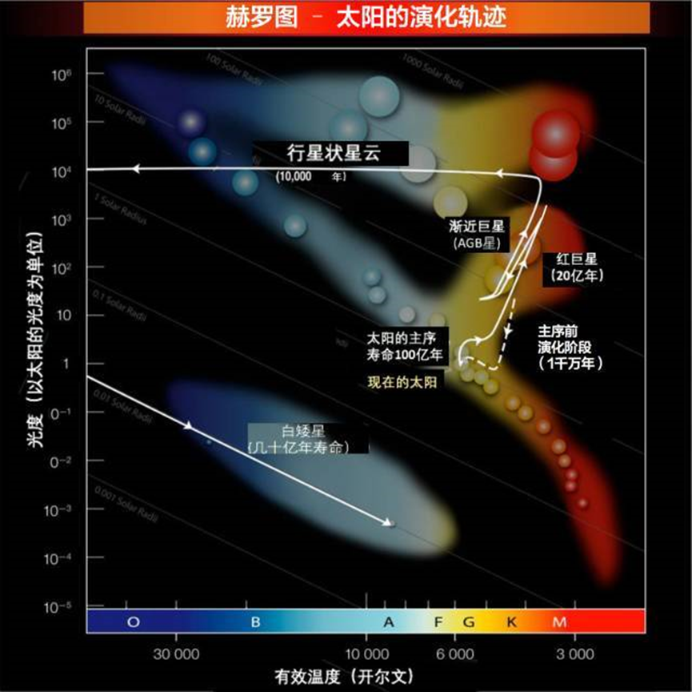
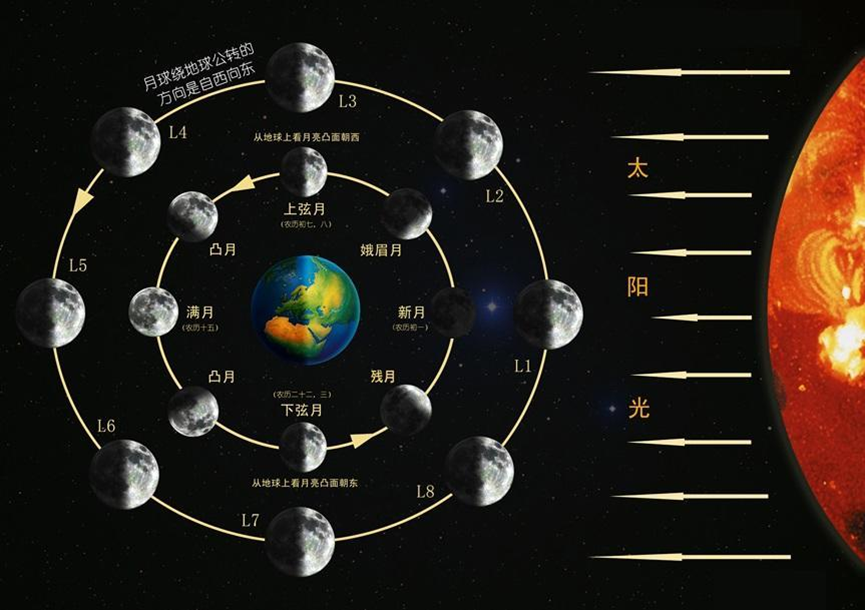

根据光谱吸收线分为 I 型超新星和 II 型超新星
没有氢吸收线
没有氢、氦吸收线，有硅吸收线
吸收伴星的氢后，质量增大温度上升，然后引发氢聚变，一路走下去，最终高温足以引发碳核，造成爆发。在这过程中，星体质量和体积都比较小，从伴星那吸收来的外层氢能燃烧得比较完全，因此没有氢线
Ia型超新星是核崩溃型超新星，一般是白矮星达到临界质量即钱德拉塞卡极限时发生的超新星爆炸。因为爆发时质量、组成都是一致的，因此具有特征性的光度曲线，爆发之后光度是时间的函数，即峰值亮度固定为绝对星等-19.44等，持续一段时间后开始下降，被称为标准烛光。是能量最强的超新星之一，之后会形成一个中子星或者直接变成星云消散。一般是双星中的一颗白矮星吸收伴星的质量，从而再次在表面点燃聚变反应，从而爆发；当然也有两颗白矮星相撞而产生的Ia型超新星，不过非常罕见
没有氢吸收线，有氦吸收线
Ib 和 Ic 型超新星的形成机制很可能类似于大质量恒星内部核反应燃料耗尽而形成II型超新星的过程；但有所不同的是，形成 Ib 或 Ic 型超新星的恒星由于强烈的恒星风或与其伴星的相互作用而失去了由氢元素构成的外层
有氢吸收线，根据光度变化情况分为II-P、II-L、II-n超新星，II-b型超新星接近 Ib 超新星的变种
II 型超新星是核坍缩型超新星，它是大质量恒星晚年的爆发。大质量恒星其外层的氢是没有烧完全的，因此有光谱中存在氢线
轻元素不断剧聚变成重元素，星体逐渐形成了洋葱一样的结构，越往深元素越重，温度更高燃烧更快。当燃烧到铁时，只需要很短时间便能燃烧殆尽。并且，由于铁聚变是吸收能量的，在这一瞬间辐射压就降到了0，比较靠近的深层迅速坍缩，挤压到核心时速度又瞬间降为0。联想一个网球放在篮球上然后自由落下的实验，篮球质量大动量大，他顶到内核时会将动量传递给上层，由此往外爆炸，随即碰撞至外壳，引发超新星爆发
是室女座的一系列星系
该星系链以亚美尼亚天体物理学家本杰明·马卡良的名字命名，他在20世纪60年代早期发现了它们的共同运功
马卡良星系链是室女座星系团的一部分，室女座星系团是最近的星系群，包含2000多个星系。通过望远镜长时间曝光可观测到众多星系，其中不乏众多梅西耶天体，如M84、M87
彗星接近太阳的时候，受到太阳的加热和吹拂作用，造成彗核内部挥发性物质蒸发，并且向外喷射，同时带走一些尘埃微粒
彗核被尘埃和气体形成的稀薄大气所围绕，这一层物质称为彗发，即“彗星的头发”
同时气体和尘埃会形成两条指向不同方向的彗尾：
离子尾：即气体被太阳风电离所形成的尾巴，主要由气体离子组成，因为气体收到太阳风微粒和其形成的磁场的作用，因此一般总是背对着太阳，相较于尘埃尾更长也更直。也称第一型彗尾
尘埃尾：即尘埃形成的尾巴，一般是弯曲的，出现在彗星轨道的后方。也称第二型彗尾
某些特殊情况（如地球穿越过彗星的轨道平面，或者从侧向看向彗星）还可能看到两条指向相反的彗尾，指向太阳的尾巴称为反尾，本质是离子彗尾
海王星轨道以外、距太阳45亿千米至80亿千米的区域，著名天体有冥王星
短周期彗星即起源柯伊伯带或离散盘
位于柯伊伯带外侧，散布着零星的主要由冰组成的黄道离散天体，它们的运行轨道不在黄道面附近，而是和黄道面有着不一样的倾角，他们共同组成“离散盘”。著名天体有阋神星
当前主流观点是太阳系形成过程中，海王星的外移造成的引力扰动，使柯伊伯带的部分天体射入高倾斜和高离心率的轨道内
被认为是一个围绕着太阳的、由微小的冰球体组成的球形云团。奥尔特云内接离散盘，而其外边缘标志着太阳系结构上的边缘和太阳引力范围的边缘
被认为是长周期彗星的发源地。当太阳系的附近有恒星或其它星体经过时，其引力可能会对奥尔特云星体造成扰动，使其进入内太阳系，成为彗星
有天文学家将赛德娜认为是人类发现的第一颗奥尔特云天体，其公转轨道离心率非常大
这里特指天文学中的光度含义，即物体每单位时间内辐射出的总能量，也就是辐射通量，可用来衡量恒星发光强度
光度与亮度不同，亮度单位为 nit，且与距离有关，而光度与距离无关，单位一般用瓦特、尔格每秒或太阳光度来表示
恒星光度取决于两个因素：
恒星体积：体积越大表面积越大，从而导致辐射面积大
恒星温度：温度越高，光度越高
光度、视星等、距离是三个相关的参数，只要知道其中两个就能推算出第三个
光度和绝对星等都可以衡量恒星发光强度，它们之间也存在简单的常数关系：绝对星等相差1，光度相差2.512倍，一等星和六等星之间差约100倍的光度（对于视星等来说，差100的亮度）
衡量天体亮度（视星等）和光度（绝对星等）的量，星等越低，光度或亮度就越高
衡量看到的星星的明暗程度，和星星光度、距离有关
很明显，若一颗星离地球很远，就算它很亮其视星等也可能比较低
一般在观星的时候用视星等较多，天文学测量也会用到
衡量星星真实发光能力，只和光度有关，和距离无关
将天体假想放置于距离为10秒差距处所得到的视星等，称为绝对星等
赫罗图（H-R diagram）是以恒星的绝对星等或光度相对于光谱类型或有效温度绘制的散布图
它将每颗恒星绘制在一张图表上，可以测量它的温度（颜色）和光度，而它与每颗恒星的位置无关。该图由赫茨普龙和罗素在1910年代创建，是了解恒星演化很重要的一步

赫罗图横坐标为：恒星温度，单位开尔文：K；赫罗图纵坐标为：恒星光度，一般以太阳光度为单位1
赫罗图显示了不同类型恒星的演化过程：
主序带：
大约90%的恒星位于赫罗图左上角至右下角的带状上，这条线称为主序带。位于主序带上的恒星一般称之为”主序星“，其在主序带上的时期称为主序期
分子云区：
位于图中极右，但随着分子云开始收缩，其温度将开始上升，会慢慢移向主序带
超巨星区：
位于主序带右上方，具体可细分为红超巨星区、蓝超巨星区和黄超巨星区等，它们都是恒星离开主序阶段后，进入到演化晚期的阶段。事实上，这些超巨星区，并没有绝对的演化界限，如一颗蓝巨星可逐次演化为蓝超巨星--黄超巨星--红超巨星等。注意和红巨星、蓝巨星区分
白矮星、中子星区：
位于主序带左下方。演化到晚期的恒星，在离开超巨星阶段后，将越过主序带，往赫罗图的左下方演化
与赫罗图相关的颜色-星等图（CMD）绘制的是颜色的视星等和颜色，通常针对恒星都在相同距离上的星团绘制
又称混合食、复合食
指一次日食中，一部分地区可见日全食，另一部分可见日环食，则称此次日食为日全环食，简称全环食

依次经历：新月（朔月，几乎不可见）、峨眉月（傍晚，反C形）、上弦月（上半月）、盈凸月、满月（望月）、亏凸月、下弦月（下半月）、残月（早晨，C形）
无论是哪一种月相，其亮的一部分永远指向太阳
中心天体对环绕天体的潮汐作用，使得环绕天体的自转周期与公转周期到达一致，使得环绕天体始终只能以某个面面对中心天体，此即潮汐锁定
潮汐锁定是自然规律，以下均以地月系统为例：
潮汐力和扁球体：地球对月球的引力是不均匀的（有梯度），月球背面受到的引力比中心小，而中心引力又比月球正面更小，对月球形成拉扯作用：中心对月球正面、月球背面对中心，即在引力轴线上形成隆起，形成轻微的扁球体
潮汐拖拽：环绕天体对潮汐力引起的周期性的重塑会产生抵抗，但需要一些时间来重塑重力的平衡，而在这段时间，两个天体的轴向因为环绕天体的旋转已经改变，所以形成的隆起会与引力轴向有一段距离。从太空中的瞭望点来看，隆起最高点的方向与指向主星的方向已经有了偏差。如果环绕天体的自转周期短于它的轨道周期，这个隆起将超前于引力轴的指向；反过来如果环绕天体的自转周期较长，取而代之的是隆起将落后
速度变化：若自转速度较快，则该隆起会落后，即将自转速度减慢，反之则拖拽使其自转速度上升
轨道变化：总角动量守恒，因此当月球自转速度降低失去角动量时，得出月球的轨道会提升
中心天体的锁定：环绕天体对中心天体同样有潮汐力的作用，但一般非常微小。而在某些特殊系统：例如行星和卫星质量相差没有过于悬殊（如冥王星和卡戎），或是其他双星情况，可能也会使中心天体被潮汐锁定，此时在另一颗星球上同样只能看到一面的主星
轨道共振：事实上潮汐锁定是轨道共振在1:1时的一种特殊情况。在轨道离心率较高的情况下，潮汐力变化较大，在这种情况下，轨道周期和自转周期的比率是一些明确的分数，一个著名的例子是水星的自转-锁定到与公转太阳周期为3:2的共振
超大质量黑洞其视界上的潮汐力并没有想象中的那么大，事实上，黑洞质量越大，其视界上的潮汐力就越小。因为引力是和距离成平方反比关系，和质量只是正比（一次）关系